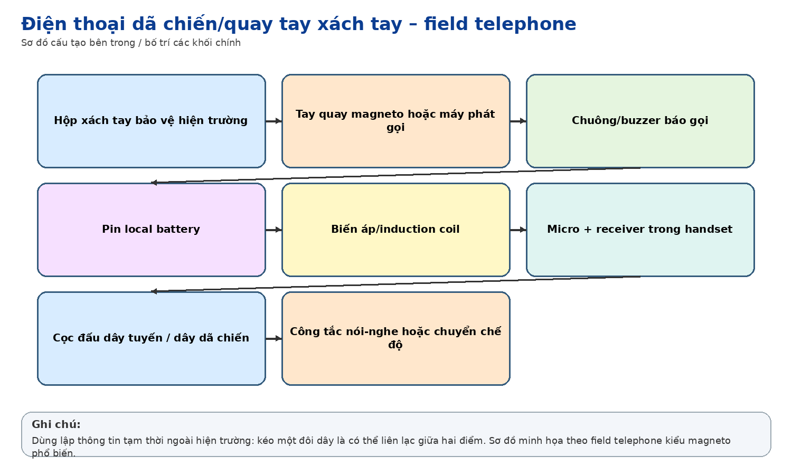
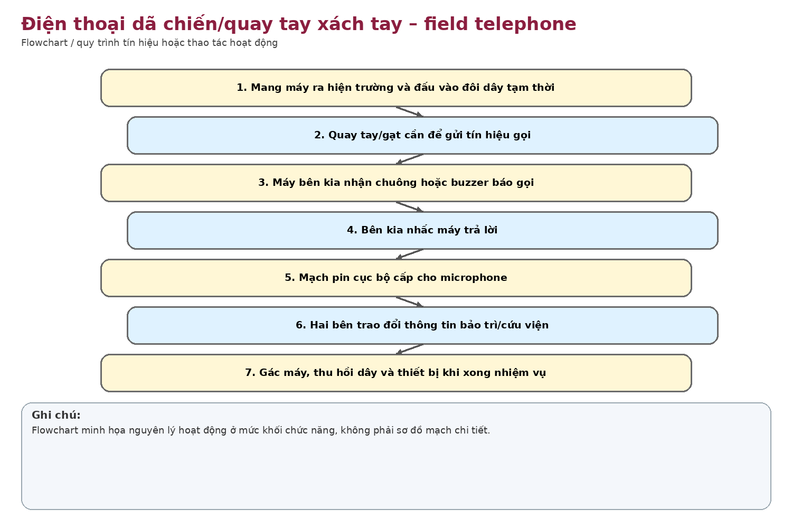
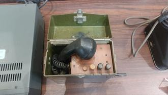

Nhận dạng & niên đại
Công dụng
Công dụng chung
Thiết lập liên lạc thoại hai dây cơ động; gọi bằng máy phát magneto quay tay, thoại dùng pin cục bộ.
Trong thông tin tín hiệu đường sắt
Nhân viên thông tin có thể mang ra hiện trường khi cáp chính hỏng, thi công tuyến, cứu viện hoặc cần liên lạc tạm giữa các tổ công tác.
Phạm vi làm việc
Cơ động, độc lập nguồn lưới, thích hợp triển khai nhanh tại hiện trường; cự ly phụ thuộc chất lượng dây, pin và mạch.
Cấu tạo bên trong

Hộp kim loại xách tay; handset; máy phát magneto tay quay bên hông; cọc đấu dây; mạng thoại/anti-sidetone; chuông/buzzer; ngăn pin và các nút kiểm tra/chuyển mạch.
Cách thức hoạt động

Hai máy nối bằng đôi dây. Người gọi quay magneto để phát AC gọi chuông; khi hai bên nhấc handset, pin cục bộ cấp mạch microphone và tín hiệu thoại truyền trực tiếp trên đường dây.
Thông số kỹ thuật
Thông số chính
Không ghi thông số định lượng do chưa xác định model. Thiết bị so sánh T-65/HCX-3 dùng hai pin 1,5 V và có magneto, nhưng không được coi là thông số chính thức của hiện vật này.
Nguồn điện / cấp nguồn
Pin cục bộ cho thoại; magneto cơ khí cho tín hiệu gọi.
Giá trị lịch sử – trưng bày
Phản ánh phương thức thông tin hiện trường trước bộ đàm số/di động: chỉ cần dây và hai máy là có thể lập một kênh liên lạc độc lập.
Tình trạng quan sát
Hộp màu xanh ô-liu, tay quay, handset và cụm điều khiển còn thấy rõ; không thấy tem model/hãng trong ảnh.
Ảnh hiện vật


Xác minh thêm & nguồn tham khảo
Căn cứ mốc sử dụng tại Việt Nam/ĐSVN:
Công
dụng suy luận từ cấu tạo; cần chứng cứ lịch sử của Công ty.